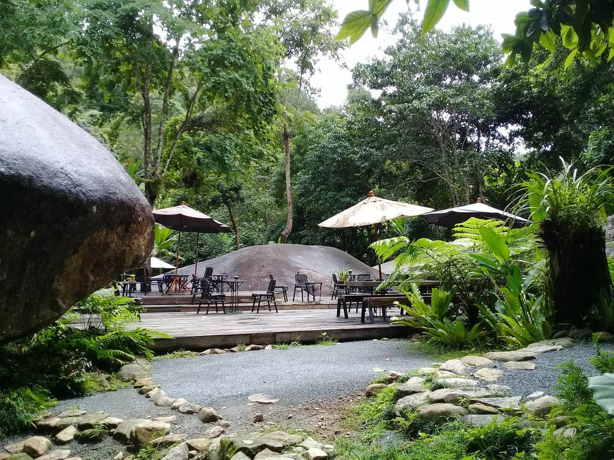
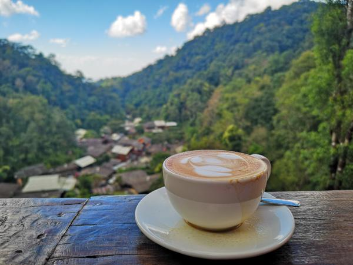

- ระเบียงวิวคาเฟ่
ร้านคาเฟ่ดูพระอาทิตย์ตกและหมู่บ้านแม่กำปอง บรรยายกาศดีเด็ดดวงไม่แพ้ใคร ร้านเปิดเวลา 08.00 ปิด 17.00


|

|
|

|
การส่งเสริมให้มีการท่องเที่ยวในเชิงวัฒนธรรมแบบยั่งยืน ต้องขอความร่วมมือจากชาวบ้านให้อนุรักษ์ศิลปะและวิถีชีวิตของ ตนเองไว้ และในหมู่บ้านมีโบสถ์ตั้งอยู่กลางน้ำซึ่งเกี่ยวข้องกับเรื่องวัฒนธรรม ชำรุดทรุดโทรมใช้การแทบไม่ได้แล้วตอนนี้กำลัง บูรณะเพื่อนำมาใช้ประโยชน์ทางศาสนา และบริเวณโดยรอบเป็นลำห้วยมีน้ำล้อมรอบอยู่สามารถนำมาจัดภูมิทัศน์ได้ จะได้เป็นสถาน ที่พักผ่อนและใช้ในการกราบไหว้และทำพิธีต่าง ๆ ทางศาสนา ซึ่งเป็นการท่องเที่ยวเชิงวัฒนธรรมนอกเหนือจากการทำบุญตักบาตร